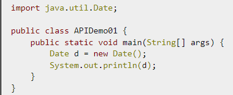

函式呼叫的方法有以下兩種
import類別，使用Java提供的套件
若要執行寫的方法，則需在Java內呼叫它。依據方法是否有回傳值而有以下兩種呼叫的方式：
若有回傳值，方法回返的結果會視為一般資料，可以直接使用。
EX: int larger = max(3,17); //max方法本身回傳一個int值，宣告一個相同型態的變數直接去接收它回傳的值。
若無回傳值(即回傳void)，則方法內可能為一個敘述。
EX: System.out.println("方法實作完成");